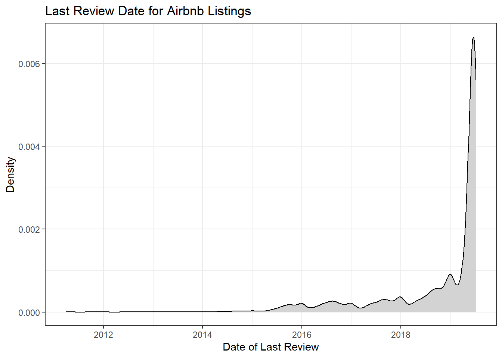

library(tidyverse)
library(ggplot2)
knitr::opts_chunk$set(echo = TRUE, warning=FALSE, message=FALSE)Challenge 5
challenge_5
air_bnb
Introduction to Visualization
Challenge Overview
Today’s challenge is to:
- read in a data set, and describe the data set using both words and any supporting information (e.g., tables, etc)
- tidy data (as needed, including sanity checks)
- mutate variables as needed (including sanity checks)
- create at least two univariate visualizations
- try to make them “publication” ready
- Explain why you choose the specific graph type
- Create at least one bivariate visualization
- try to make them “publication” ready
- Explain why you choose the specific graph type
Read in data
air_bnb = read_csv("_data/AB_NYC_2019.csv", show_col_types = FALSE)Briefly describe the data
This is a dataset containing information about Airbnb listings in New York City. The variables include id and name of the listing, id and name of the host, neighborhood (including neighborhood group), latitude and longitude, room type, price, the minimum number of nights someone must book, number of reviews, last review date, reviews per month, the calculated count of host listings, and the availability (number out of 365/a year). Each row is a different listing.
air_bnb# A tibble: 48,895 × 16
id name host_id host_…¹ neigh…² neigh…³ latit…⁴ longi…⁵ room_…⁶ price
<dbl> <chr> <dbl> <chr> <chr> <chr> <dbl> <dbl> <chr> <dbl>
1 2539 Clean & … 2787 John Brookl… Kensin… 40.6 -74.0 Privat… 149
2 2595 Skylit M… 2845 Jennif… Manhat… Midtown 40.8 -74.0 Entire… 225
3 3647 THE VILL… 4632 Elisab… Manhat… Harlem 40.8 -73.9 Privat… 150
4 3831 Cozy Ent… 4869 LisaRo… Brookl… Clinto… 40.7 -74.0 Entire… 89
5 5022 Entire A… 7192 Laura Manhat… East H… 40.8 -73.9 Entire… 80
6 5099 Large Co… 7322 Chris Manhat… Murray… 40.7 -74.0 Entire… 200
7 5121 BlissArt… 7356 Garon Brookl… Bedfor… 40.7 -74.0 Privat… 60
8 5178 Large Fu… 8967 Shunic… Manhat… Hell's… 40.8 -74.0 Privat… 79
9 5203 Cozy Cle… 7490 MaryEl… Manhat… Upper … 40.8 -74.0 Privat… 79
10 5238 Cute & C… 7549 Ben Manhat… Chinat… 40.7 -74.0 Entire… 150
# … with 48,885 more rows, 6 more variables: minimum_nights <dbl>,
# number_of_reviews <dbl>, last_review <date>, reviews_per_month <dbl>,
# calculated_host_listings_count <dbl>, availability_365 <dbl>, and
# abbreviated variable names ¹host_name, ²neighbourhood_group,
# ³neighbourhood, ⁴latitude, ⁵longitude, ⁶room_type
# ℹ Use `print(n = ...)` to see more rows, and `colnames()` to see all variable namessummary(air_bnb) id name host_id host_name
Min. : 2539 Length:48895 Min. : 2438 Length:48895
1st Qu.: 9471945 Class :character 1st Qu.: 7822033 Class :character
Median :19677284 Mode :character Median : 30793816 Mode :character
Mean :19017143 Mean : 67620011
3rd Qu.:29152178 3rd Qu.:107434423
Max. :36487245 Max. :274321313
neighbourhood_group neighbourhood latitude longitude
Length:48895 Length:48895 Min. :40.50 Min. :-74.24
Class :character Class :character 1st Qu.:40.69 1st Qu.:-73.98
Mode :character Mode :character Median :40.72 Median :-73.96
Mean :40.73 Mean :-73.95
3rd Qu.:40.76 3rd Qu.:-73.94
Max. :40.91 Max. :-73.71
room_type price minimum_nights number_of_reviews
Length:48895 Min. : 0.0 Min. : 1.00 Min. : 0.00
Class :character 1st Qu.: 69.0 1st Qu.: 1.00 1st Qu.: 1.00
Mode :character Median : 106.0 Median : 3.00 Median : 5.00
Mean : 152.7 Mean : 7.03 Mean : 23.27
3rd Qu.: 175.0 3rd Qu.: 5.00 3rd Qu.: 24.00
Max. :10000.0 Max. :1250.00 Max. :629.00
last_review reviews_per_month calculated_host_listings_count
Min. :2011-03-28 Min. : 0.010 Min. : 1.000
1st Qu.:2018-07-08 1st Qu.: 0.190 1st Qu.: 1.000
Median :2019-05-19 Median : 0.720 Median : 1.000
Mean :2018-10-04 Mean : 1.373 Mean : 7.144
3rd Qu.:2019-06-23 3rd Qu.: 2.020 3rd Qu.: 2.000
Max. :2019-07-08 Max. :58.500 Max. :327.000
NA's :10052 NA's :10052
availability_365
Min. : 0.0
1st Qu.: 0.0
Median : 45.0
Mean :112.8
3rd Qu.:227.0
Max. :365.0
Tidy Data
I decided to take a few steps to tidy the data. First, I replaced the NAs in the reviews_per_month column because I could see in the number_of_reviews column there were some rows that had 0 (since you can’t divide 0 by a number of you get NA). I also removed some columns I knew I wouldn’t use for this analysis (id, name, host_id, host_name, latitude, and longitude). I thought about maybe dropping listings that had 0 availability_365 but I didn’t because I wasn’t sure if 0 meant the listing was inactive or fully booked.
air_bnb = air_bnb %>%
mutate(reviews_per_month = replace_na(reviews_per_month, 0))
air_bnb = air_bnb %>%
select(-c("id", "name", "host_id", "host_name", "latitude", "longitude"))Univariate Visualizations
The first variable I wanted to look at is room_type, because I thought it would be really interesting and could give some insight into the dataset as a whole. I chose a bar graph for room_type because it is a discrete variable and I think a bar graph makes it easy to visualize. The graph shows that entire home/apt is the most common room type (25409 listings), private room is close behind with the second most listings (22326 listings), while there are very few listings with a shared room (1160 listings).
ggplot(air_bnb, aes(x = room_type)) +
geom_bar(fill = "lightgrey") +
geom_text(aes(label = ..count..), stat = "count", size = 3, vjust = 1,
color = "black") +
labs(title = "Room Type for Airbnb Listings", x = "Room Type", y = "Frequency") +
theme_bw()I also wanted to examine neighbourhood_group because it provides a good idea of how many listings are in each area. I also chose a bar graph for neighbourhood_group because it is a discrete variable. The graph shows that there are many listings in Manhattan (21661 listings) and Brooklyn (20104 listings), much less in Queens (5666), and few in Bronx (1091 listings) and Staten Island (373 listings).
ggplot(air_bnb, aes(x = neighbourhood_group)) +
geom_bar(fill = "lightgrey") +
geom_text(aes(label = ..count..), stat = "count", size = 3, vjust = 1,
color = "black") +
labs(title = "Neighborhood Group for Airbnb Listings", x = "Neighborhood Group",
y = "Frequency") +
theme_bw()The next variable I wanted to look at is number_of_reviews. Since it is a continuous variable, I used a histogram. The histogram shows that many listings have few reviews, and as the number of reviews increases the frequency decreases.
ggplot(air_bnb, aes(x = number_of_reviews)) +
geom_histogram(fill = "lightgrey") +
xlim(0, 100) +
labs(title = "Number of Reviews for Airbnb Listings",
x = "Number of Reviews", y = "Frequency") +
theme_bw()For the final univariate visualization, I looked at last_review. This variable contains the date that the last review for the listing was given. I chose a density plot because it is a continuous variable and it looks smoother than a histogram. The plot shows that most of the listings had recent reviews (as of 2019), but a few had their last review in 2016 (these may be listings no longer active).
ggplot(air_bnb, aes(x = last_review)) +
geom_density(fill = "lightgrey") +
labs(title = "Last Review Date for Airbnb Listings", x = "Date of Last Review",
y = "Density") +
theme_bw()
Bivariate Visualization(s)
This visualization is a histogram of price (continuous) with room_type (discrete) as the fill. I chose this combination because I thought it showed these variables well together and gave some interesting insights. As expected, the shared rooms generally cost the least, while private rooms go for slightly more than shared rooms (however they have a fairly large range and some go for more), and the entire home/apt listings generally cost the most (but also have a wide range of prices).
ggplot(air_bnb, aes(x = price, fill = room_type)) +
geom_histogram(fill = "lightgrey") +
xlim(0, 600) +
labs(title = "Airbnb Price and Room Type", x = "Price", y = "Frequency",
fill = guide_legend("Room Type")) +
theme_bw()